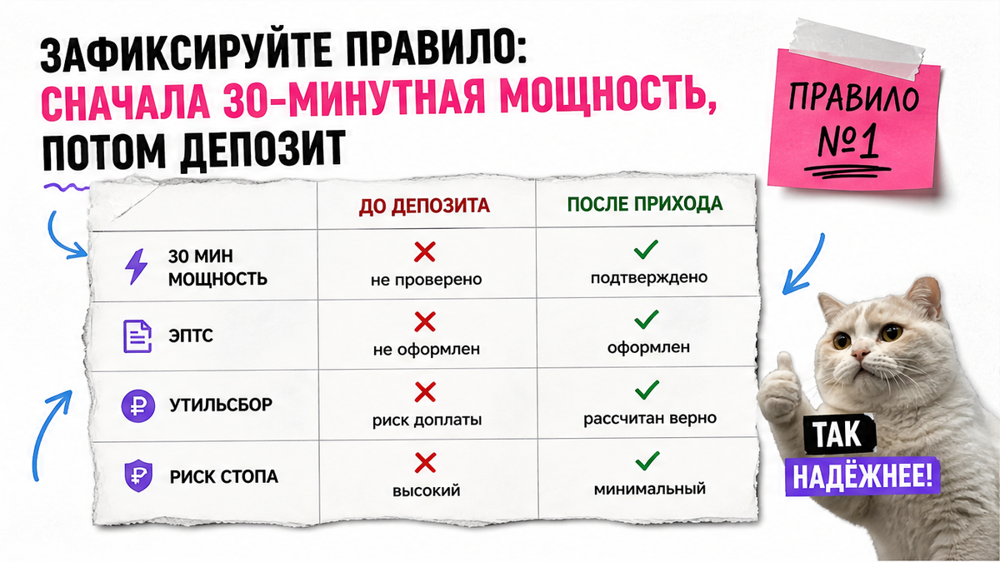
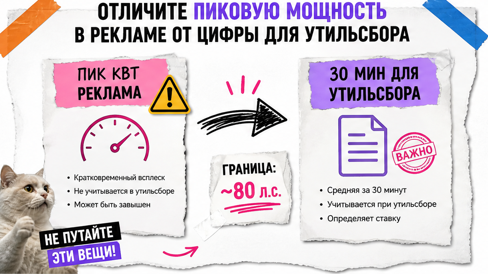
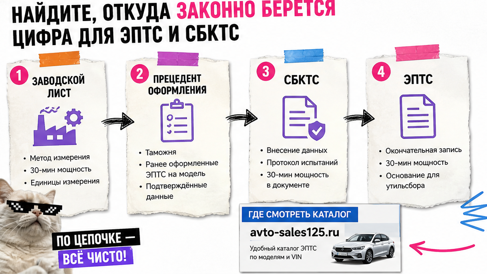

В карточке китайского электромобиля красуются "лошади" для разгона, а про 30-минутную мощность молчат. Вы боитесь внести депозит и во Владивостоке узнать, что утильсбор взлетел почти на миллион. Ниже – спокойный чек-лист покупателя: до оплаты собрать папку подтверждений по конкретной комплектации и понять, проходит ли модель порог льготного утильсбора ≤80 л.с.
TL;DR / Быстрый инсайт: Для ЭПТС и утильсбора важна не пиковая мощность из рекламы, а максимальная 30-минутная – "длительная" цифра системы электротяги. С 01.12.2025 льготный утильсбор физлица по EV и последовательным гибридам завязан на порог 80 л.с. (58,84 кВт) по этой цифре. Сначала прецедент или документы завода, потом ориентир "пик × 0,45" (это практика, не ГОСТ). Депозит – только после сверки комплектации и ответа подборщика.
Типичная история: человек выбирает красивый китайский EV с пиком около 180 л.с., считает утильсбор "как у всех" по картинке продавца и платит депозит. На СБКТС/ЭПТС выясняется: 180 × 0,45 = 81 л.с. – льгота сорвалась. Правило Авто-Сейлс: сначала мощность для документов, потом деньги.
Сюрприз границы: разница в 5 пиковых "лошадей" (175 против 180) в примерах рынка даёт разный режим утильсбора – около 3 400 ₽ против почти 991 200 ₽. Росстандарт прямо сказал: опубликованного ГОСТ/ПНСТ с формулой ×0,45 нет. Нельзя верить калькулятору "на глаз" без источника цифры по вашей версии.

Растаможка электромобиля из Китая – это не только пошлина и НДС. Для физлица с 1 декабря 2025 льготный утильсбор по EV и последовательным гибридам смотрит на 30-минутную мощность и порог 80 л.с. Пик из рекламы эту проверку не закрывает.
На пальцах: пик – короткий рывок, как спринт. 30-минутная – сколько система электротяги держит около получаса. Именно её вписывают в ЭПТС (решение Коллегии ЕЭК № 122). Китайские OEM часто не пишут её в маркетинге – цифра появляется из лаборатории, СБКТС или ЭПТС.
Делать: до любого депозита записать точную комплектацию и спросить, какая 30-минутная встанет в документы. Не делать: переводить предоплату, опираясь только на "лошади" с баннера.
Схема до депозита:
Карточка модели → Пик vs 30 минут → Прецедент/документы завода → Вилка риска (если данных нет) → Порог 80 л.с. → Вопрос подборщику → Предрасчёт в каталоге → Решение о депозите

Запрос "30 минутная мощность" у новичков почти всегда начинается с путаницы: в объявлении одна цифра, в расчёте платежа – другая. ГОСТ Р 41.85-99 (UNECE R85) определяет максимальную 30-минутную мощность как среднюю полезную мощность системы электротяги за 30 минут. Письма Минфина/ФНС подтверждают: в ЭПТС пишут именно её, не пик.
На практике продавец может честно назвать пик 200+ л.с. и молчать про 30-минутную. Это не всегда обман – просто другой показатель. Нужна документная цифра по вашей комплектации.
| Что смотрите | Пиковая (реклама) | 30-минутная (документы) |
|---|---|---|
| Смысл | Короткий максимум разгона | Длительная мощность для ЭПТС/утильсбора |
| Где обычно пишут | Сайты OEM, карточки маркетплейсов | СБКТС, ЭПТС, ОТТС, протоколы, прецеденты |
| Для льготы ≤80 л.с. | Нельзя опираться | Именно её сравнивают с порогом |
| Если цифры нет | Частый случай у EV из Китая | Ищем прецедент или считаем вилку риска |
Делать: в чат писать прямо: "нужна максимальная 30-минутная мощность в кВт/л.с. и основание". Не делать: считать льготу по пику "на глаз".

Приоритет простой: подтверждённые данные бьют формулу. Если по модели уже есть оформление с 30-минутной мощностью, обычно опираются на прецедент или документы завода, а не "перебивают" их коэффициентом.
Например, в открытых справочниках встречаются ориентиры: BYD Seagull около 25 кВт, Toyota bZ3X около 45 кВт, Changan Qiyuan Q05 (электро) около 54 кВт, BYD Yuan Plus около 65 кВт. Это не гарантия по VIN – версии внутри линейки отличаются.
Делать: собирать 5–8 подтверждений. Не делать: верить таблице "все модели сразу" без даты и версии.
С февраля 2026 в практике СЭП для моделей без истории встречается ориентир: 30-минутная ≈ пик × 0,45. Типичная ошибка – принять это за "закон России". Росстандарт сообщил: документов стандартизации с таким порядком расчёта нет. Формула – практика, не ГОСТ.
Льготные ориентиры: около 3 400 ₽ (до 3 лет) и около 5 200 ₽ (старше 3 лет) – только при условиях льготы. Иначе коммерческая шкала. Финальный расчёт – в каталоге Авто-Сейлс или у менеджера.
Делать: помечать вилку как риск. Не делать: обещать себе льготу без источника.
| Тип | Что обычно берут для мощности | Порог льготы физлица (ориентир) |
|---|---|---|
| Чистый EV | Максимальная 30-минутная электротяги | ≤80 л.с. по 30-мин |
| Последовательный (EREV) | Как правило только 30-мин электро | ≤80 л.с. по 30-мин |
| Параллельный гибрид | Часто ДВС + 30-мин электро | Правило суммирования другое – уточнять отдельно |
В реальном проекте покупатель "гибрида из Китая" без уточнения схемы силовой установки рискует посчитать не ту базу. Делать: сразу писать тип привода словами. Не делать: смешивать правила EV и параллельного гибрида.
Критерий результата: есть чек-лист из 8 проверок, сверка "пик vs 30 минут", сценарий "есть прецедент / нет прецедента" и список вопросов до оплаты, а не после СВХ во Владивостоке. На границе 78–82 л.с. – повторная проверка обязательна.
Делать: останавливать сделку при дыре в папке. Не делать: "бронировать сегодня" без основания мощности.
Материал проверен: редакция Авто-Сейлс (эксперты по авто под заказ из Японии, Кореи и Китая).
Достоверность: ПП РФ № 1713 (утильсбор с 01.12.2025), решение Коллегии ЕЭК № 122, ГОСТ Р 41.85-99, публикации Autonews с позицией Росстандарта о формуле ×0,45, практика СБКТС/ЭПТС и открытые справочники по китайским комплектациям на 2026-10-03. Суммы по VIN – только через каталог и менеджера.
Пиковая – короткий максимум для разгона в рекламе. 30-минутная – средняя полезная мощность электротяги примерно за полчаса; её пишут в ЭПТС и используют для утильсбора. До депозита берите документную цифру, а не баннер.
Да. С 01.12.2025 для физлица по EV и последовательным гибридам порог льготы связан с 80 л.с. (58,84 кВт) по максимальной 30-минутной мощности. Пик из карточки этот порог не закрывает.
Ищите прецедент СБКТС/ЭПТС или заводские данные по вашей комплектации. Если истории нет – посчитайте ориентир пик × 0,45, отметьте риск и спросите подборщика основание цифры до оплаты. На границе 78–82 л.с. депозит ставьте на паузу.
Нет, если он не показывает источник 30-минутной мощности именно вашей версии. Сверьте комплектацию и основание цифры, затем запросите расчёт в каталоге Авто-Сейлс.
Сначала уточните схему: последовательный (часто только 30-мин электро) или параллельный (часто ДВС + 30-мин электро). Без типа привода любой "проходной" расчёт бессмысленен.
Да, 30-минутные мощности моторов обычно складывают. Не берите цифру одного мотора как итоговую для порога 80 л.с.
Когда в папке есть комплектация, основание 30-минутной мощности (или честная вилка риска), ответ подборщика и предварительный расчёт платежей. Нет основания – нет перевода.